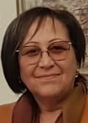

Шанлян Анна.Род: Мовсесяны
Возраст: 72
Место жительства: Ереван
Отец: Мовсесян Агас Петрович
Мать: Мовсесян (Франгян) Евгения Самсоновна
Сестра: Каримян (Мовсесян) Донара Агасьевна
Брат: Мовсесян Валерий Агасович
Сестра: Чичинадзе (Мовсесян) Анжела Агасьевна
Муж: Шанлян Петрос Акопович
Сын: Шанлян Араик Петросович
Сын: Шанлян Ваге Петросович
Родилась: 03.04.1952, Тбилиси.
Вышла замуж.
Родился сын: Шанлян Араик Петросович, 11.05.1972, Ростов-на-Дону.
Родился сын: Шанлян Ваге Петросович, 19.12.1977.